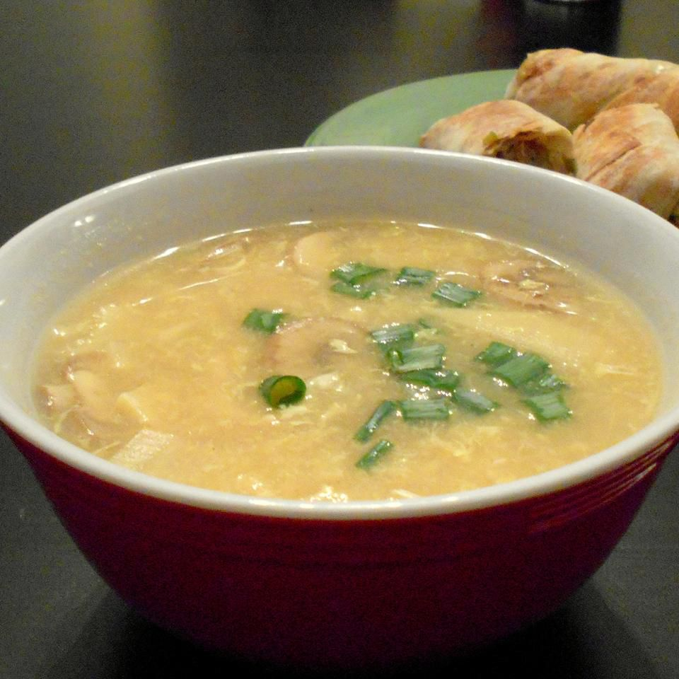
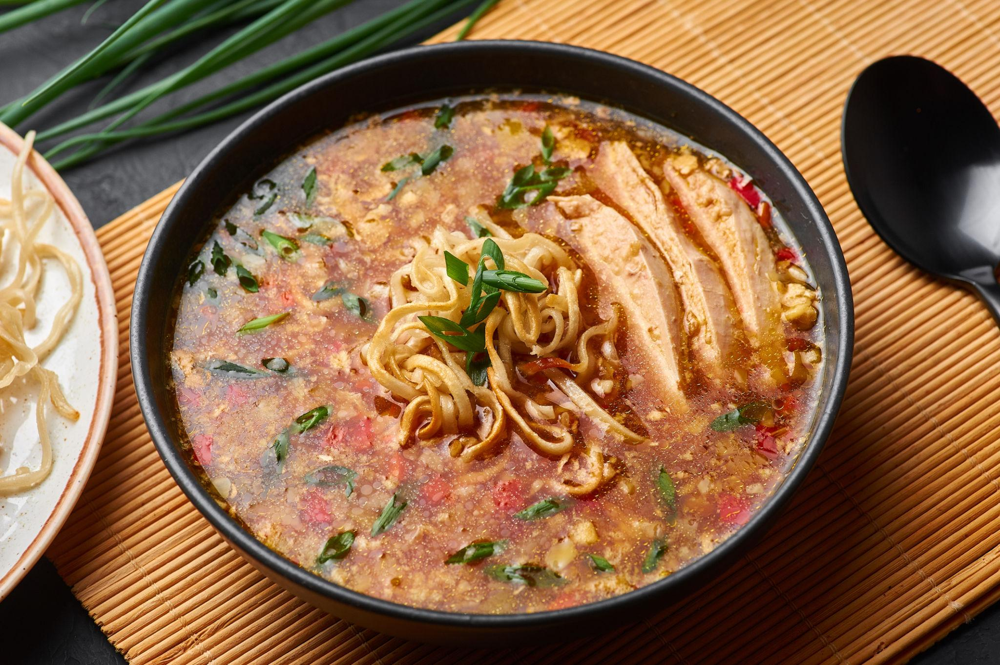
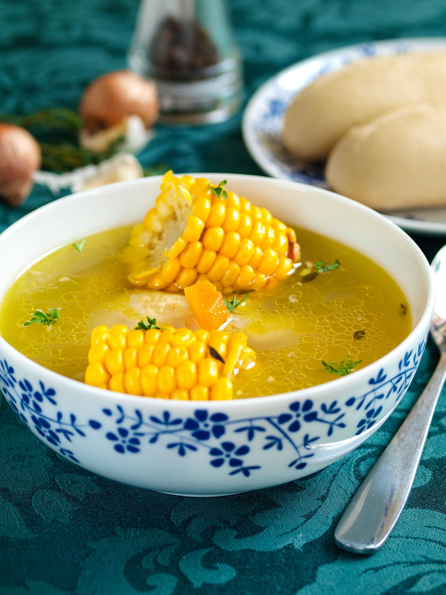
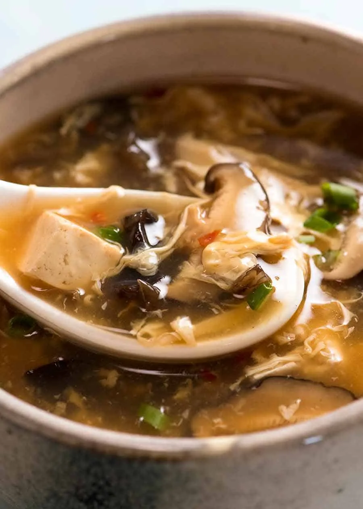
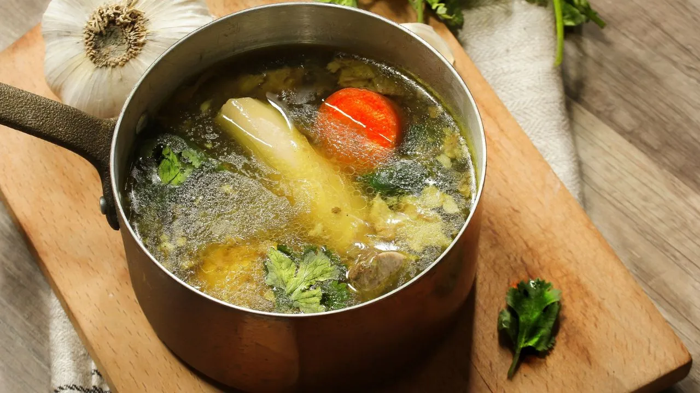
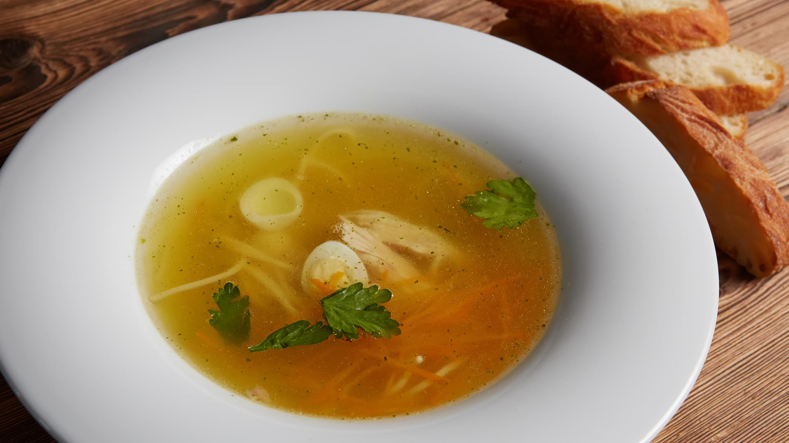

Chicken Soup

Ingredients
- 200 g chicken pieces
- 4 cups water
- 1 onion (chopped)
- 2 garlic cloves
- 1 small carrot
- 1/2 tsp black pepper
- Salt to taste
How to make Chicken Soup
- Boil chicken pieces with water.
- Add onion, carrot and garlic.
- Cook for 15 minutes.
- Add salt and pepper.
- Simmer for 5 minutes.
- Serve hot.
Chicken Manchow Soup

Ingredients
- 1 cup shredded chicken
- 2 cups chicken stock
- 1/2 cup cabbage
- 1/4 cup carrot
- 1 tsp soy sauce
- 1 tsp chili sauce
- 1 tbsp cornflour slurry
- Salt and pepper
How to make Chicken Manchow Soup
- Sauté garlic in oil.
- Add cabbage and carrot.
- Add shredded chicken and stock.
- Add soy and chili sauce.
- Add cornflour slurry.
- Cook until thick.
- Serve hot with fried noodles.
Chicken Sweet Corn Soup

Ingredients
- 1 cup sweet corn
- 1/2 cup shredded chicken
- 3 cups chicken stock
- 1 tbsp cornflour
- 1 egg (optional)
- Salt to taste
- White pepper
How to make Sweet Corn Soup
- Boil chicken stock.
- Add corn and chicken.
- Add cornflour slurry.
- Slowly add beaten egg.
- Add salt and pepper.
- Cook for 3 minutes.
- Serve hot.
Hot and Sour Chicken Soup

Ingredients
- 1 cup shredded chicken
- 3 cups chicken stock
- 1/2 cup mushrooms
- 1/4 cup carrot
- 1 tsp soy sauce
- 1 tsp vinegar
- 1 tbsp cornflour slurry
- Salt and pepper
How to make Hot & Sour Soup
- Boil chicken stock.
- Add vegetables and chicken.
- Add soy sauce and vinegar.
- Add cornflour slurry.
- Cook for 3–4 minutes.
- Add salt and pepper.
- Serve hot.
Mutton Bone Soup

Ingredients
- 300 g mutton bones
- 5 cups water
- 1 onion
- 1 tsp ginger garlic paste
- Black pepper
- Salt
How to make Mutton Soup
- Boil mutton bones with water.
- Add onion and ginger garlic.
- Cook for 30 minutes.
- Add salt and pepper.
- Simmer for 10 minutes.
- Garnish with coriander.
- Serve hot.
Chicken Clear Soup

Ingredients
- 200 g chicken
- 4 cups water
- 1 carrot
- 1/4 cup cabbage
- 1 tsp garlic
- Salt
- Black pepper
How to make Clear Soup
- Boil chicken in water.
- Add vegetables and garlic.
- Cook for 15 minutes.
- Add salt and pepper.
- Simmer for 5 minutes.
- Strain if needed.
- Serve hot.